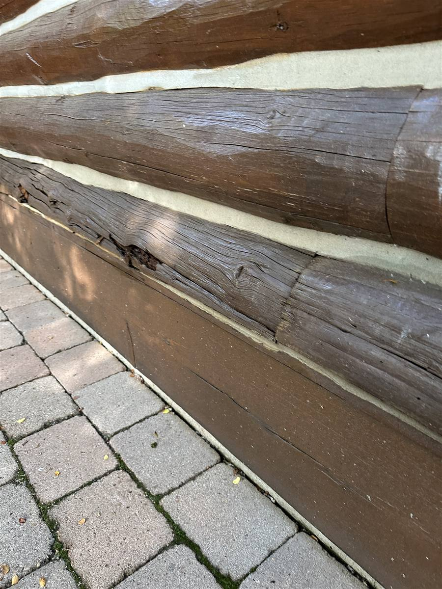

Chinking is the flexible sealant that fills the horizontal joints between the logs of a log home. It's the pale band you see running between every course of logs on a classic cabin — and it has one job: keep water, wind, and insects out of a wall that never stops moving. Logs shrink, swell, and settle with every season, so the material between them has to stretch and compress without cracking or letting go. That's chinking.

What chinking is made of
Historic cabins were chinked with whatever was on hand — a mortar of clay, lime, sand, even horsehair or moss packed into the gaps. It worked, briefly. Mortar is rigid, logs are not, and every winter of movement opened new cracks that had to be repacked come spring. Chinking an old cabin was an annual chore the way painting a fence is.
Modern chinking is a synthetic elastic compound — usually acrylic — applied over a foam backer rod set into the joint. It looks like traditional mortar from ten feet away, which is the point: it keeps the historic banded look while stretching up to several times more than the old materials could. Installed properly over good backer rod, quality synthetic chinking lasts 15–20 years in our climate. We cover the products we actually use on Idaho homes in a separate guide to chinking materials.
Chinking vs. caulk: not the same thing
This is the mistake we fix most often. Regular caulk — even good exterior caulk — is designed for joints that barely move. A chinking joint on a handcrafted log home can be two to five inches wide and moves substantially through the year. Caulk in a chinking joint almost always fails within a couple of seasons: it tears, pulls off the log line, and starts quietly funneling water into the wall. Chinking is wider, more elastic, applied thicker, and textured to bond with the log faces above and below it.
There is a place for log-home caulking — narrow checks and gaps under about an inch — but it's a different product doing a different job. If someone quotes you "caulking" for wide log joints, ask more questions.
Do all log cabins have chinking?
No — and this surprises people. Chinking belongs to a style of building: handcrafted homes with round, natural-profile logs that stack with visible gaps between courses. Many milled-log homes use tongue-and-groove or Swedish-cope profiles where the logs seat directly against each other, sealed with gaskets and thin sealant lines you barely see. Neither approach is wrong. But if your home was built with chinking joints, they must stay sealed — the design depends on it.
How to tell when chinking is failing
- Cracks along the joint line — hairline splits down the middle of the band, or separation where chinking meets log.
- Sections pulling away — the band bulges or peels off the log face; adhesion is gone even if the material looks intact.
- Daylight or drafts — visible light through a joint from inside means water gets through from outside.
- Water stains below joints — dark streaks under a chinking line mean it's already leaking.
South- and west-facing walls fail first — they take the most sun and the most movement. If you find failures, it's usually a spot repair, not a whole-home job; our guide to chinking costs in Idaho explains how the pricing works and why catching it early matters. Left alone, water behind failed chinking rots the logs themselves, and then you're into restoration — a much bigger conversation.
The one-minute check: walk your sunniest wall once a year and look at the chinking lines up close. Cracks, gaps, or peeling anywhere means it's time for an assessment — before the freeze-thaw season works on the opening.
Who does chinking work?
Chinking well is a trade skill — joint prep, backer rod sizing, tooling the surface so it sheds water and bonds correctly. It's work we do year-round on log homes across the Wood River Valley as part of our chinking and staining service. If you're not sure what your joints need, call 208-897-8100 and we'll walk the home with you.